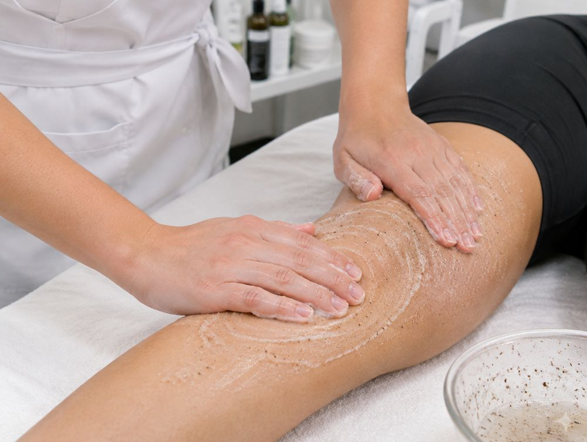

Preparación
1. Exfoliación activadora
Prepara la piel, quita células muertas y genera el primer calor. Mejora la absorción de la crema reductora.
- Cómo
- Círculos pequeños y rápidos con la palma, siempre ascendentes. Retirar con toalla húmeda tibia.
- Tiempo
- 1–2 min por zona. Una vez por semana.
- Presión
- Media.